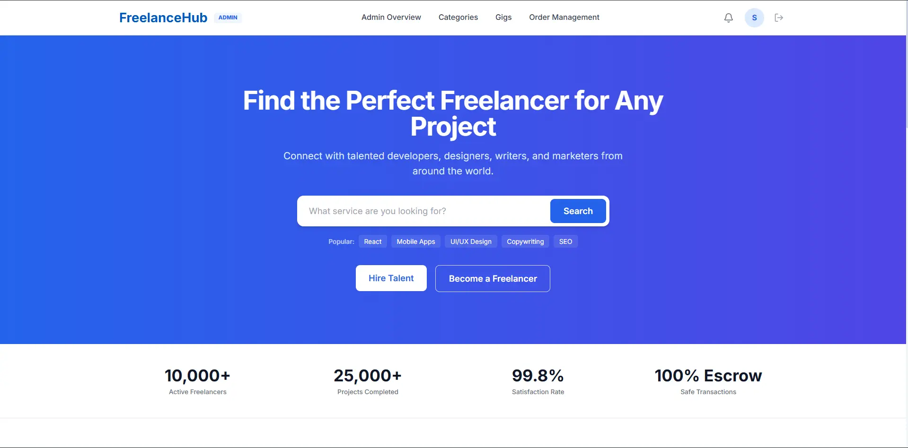

Freelance Marketplace
A multi-role service platform connecting clients and independent developers. Supports gig discovery, client proposal workflows, direct order management, a simulated wallet transaction system, and two-way client reviews. Built with a modular Spring Boot backend, Spring Security with stateless JWT role-based access control, relational database schema in MySQL managed via Hibernate, and a responsive React client interface.
TECHNOLOGY /
Java 17 · Spring Boot 3 · Spring Security · JWT · MySQL · Hibernate
· Docker · React
